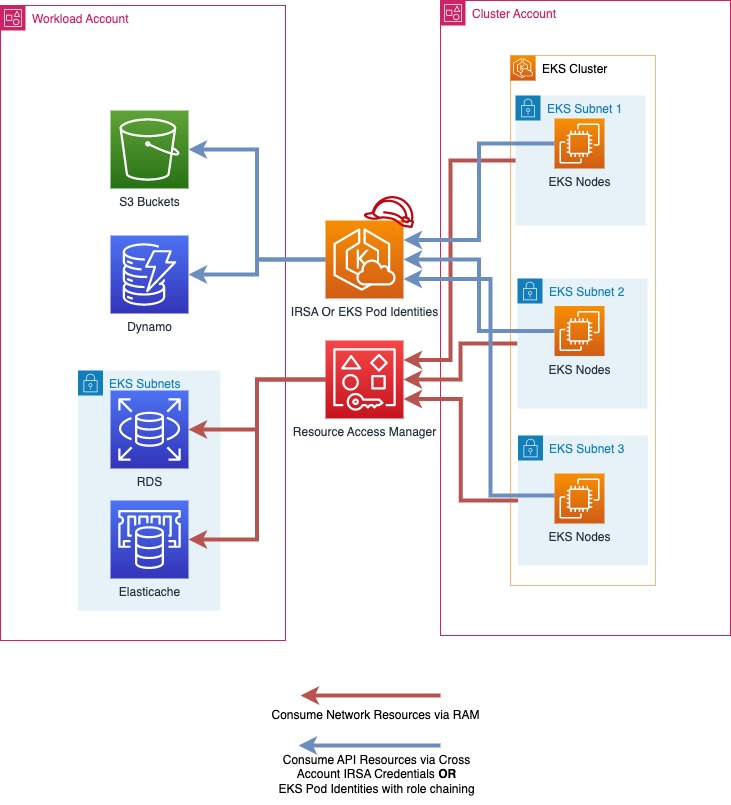
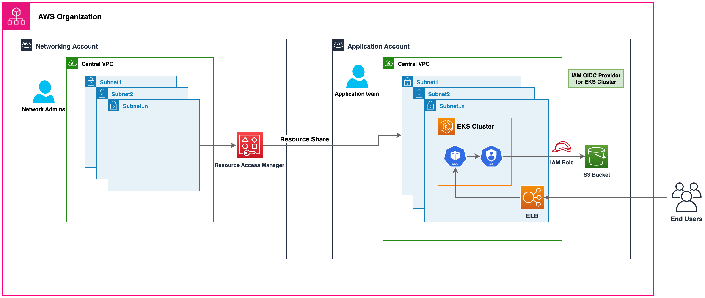

多账户策略¶
AWS建议使用多账户策略和AWS组织来帮助隔离和管理您的业务应用程序和数据。使用多账户策略有许多好处：
- 增加AWS API服务配额。配额是应用于AWS账户的，为您的工作负载使用多个账户可以增加工作负载可用的总配额。
- 更简单的身份和访问管理(IAM)策略。授予工作负载及支持它们的操作员仅访问自己的AWS账户的权限，意味着不需要花费太多时间精心制定细粒度的IAM策略来实现最小权限原则。
- 改善AWS资源隔离。根据设计，在一个账户中预置的所有资源在逻辑上都与其他账户中预置的资源隔离。这种隔离边界为您提供了一种限制应用程序相关问题、错误配置或恶意行为风险的方式。如果一个账户中出现问题，对其他账户中包含的工作负载的影响可以减少或消除。
- 更多好处，如AWS多账户策略白皮书所述
以下部分将解释如何使用集中式或分散式EKS集群方法为您的EKS工作负载实施多账户策略。
为多租户集群规划多工作负载账户策略¶
在多账户AWS策略中，属于给定工作负载的资源(如S3存储桶、ElastiCache集群和DynamoDB表)都是在包含该工作负载所有资源的AWS账户中创建的。这些被称为工作负载账户，而EKS集群则部署在被称为集群账户的账户中。集群账户将在下一节中探讨。将资源部署到专用工作负载账户类似于将kubernetes资源部署到专用命名空间。
如果合适的话，工作负载账户可以进一步细分为软件开发生命周期或其他要求。例如，给定工作负载可以有一个生产账户、一个开发账户，或者用于在特定区域托管该工作负载实例的账户。更多信息可在此AWS白皮书中找到。
在实施EKS多账户策略时，您可以采用以下方法：
集中式EKS集群¶
在这种方法中，您的EKS集群将部署在一个名为"集群账户"的单个AWS账户中。使用IAM角色服务账户(IRSA)或EKS Pod身份来提供临时AWS凭证，以及AWS资源访问管理器(RAM)来简化网络访问，您可以为多租户EKS集群采用多账户策略。集群账户将包含VPC、子网、EKS集群、EC2/Fargate计算资源(工作节点)以及运行EKS集群所需的任何其他网络配置。
在多工作负载账户策略中，AWS账户通常与kubernetes命名空间相对应，作为隔离资源组的机制。在实施多账户策略的多租户EKS集群时，仍应遵循租户隔离的最佳实践。
在您的AWS组织中可以有多个"集群账户",而拥有多个与您的软件开发生命周期需求相符的"集群账户"是最佳实践。对于运行在非常大规模的工作负载，您可能需要多个"集群账户",以确保所有工作负载都有足够的kubernetes和AWS服务配额。
|  |
|---|
| 在上图中，AWS RAM用于将子网从集群账户共享到工作负载账户。然后在EKS pod中运行的工作负载使用IRSA或EKS Pod身份和角色链接来承担其工作负载账户中的角色，并访问其AWS资源。 |
实施多工作负载账户策略的多租户集群¶
使用AWS资源访问管理器共享子网¶
AWS资源访问管理器(RAM)允许您跨AWS账户共享资源。
如果您的AWS组织已启用RAM,您可以将VPC子网从集群账户共享到您的工作负载账户。这将允许您的工作负载账户拥有的AWS资源(如Amazon ElastiCache集群或Amazon关系数据库服务(RDS)数据库)部署到与您的EKS集群相同的VPC中，并可被运行在您的EKS集群上的工作负载使用。
要通过RAM共享资源，请在集群账户的AWS控制台中打开RAM，选择"资源共享"和"创建资源共享"。命名您的资源共享并选择要共享的子网。再次选择"下一步",输入您希望与之共享子网的工作负载账户的12位数字账户ID，再次选择"下一步",然后单击"创建资源共享"完成。完成此步骤后，工作负载账户就可以在这些子网中部署资源。
资源共享也可以通过编程方式或使用基础设施即代码进行创建。
在EKS Pod身份和IRSA之间做出选择¶
在2023年的AWS re：Invent大会上，AWS推出了EKS Pod身份，作为一种更简单的方式向EKS上的pod提供临时AWS凭证。IRSA和EKS Pod身份都是向您的EKS pod提供临时AWS凭证的有效方法，并将继续得到支持。您应该考虑哪种方法最能满足您的需求。
在使用EKS集群和多个AWS账户时，IRSA可以直接承担除EKS集群所在账户以外的其他AWS账户中的角色，而EKS Pod身份则需要您配置角色链接。有关深入比较，请参阅EKS文档。
使用IAM角色服务账户访问AWS API资源¶
IAM角色服务账户(IRSA)允许您向在EKS上运行的工作负载提供临时AWS凭证。IRSA可用于从集群账户获取工作负载账户中IAM角色的临时凭证。这允许您在集群账户的EKS集群上运行的工作负载无缝地使用托管在工作负载账户中的AWS API资源(如S3存储桶)，并使用IAM身份验证访问诸如Amazon RDS数据库或Amazon EFS文件系统之类的资源。
工作负载账户中的AWS API资源和其他使用IAM身份验证的资源只能被该工作负载账户中的IAM角色凭证访问，除非已明确启用跨账户访问。
启用IRSA进行跨账户访问¶
要启用IRSA，使集群账户中的工作负载能够访问工作负载账户中的资源，您首先必须在工作负载账户中创建一个IAM OIDC身份提供程序。这可以通过与设置IRSA相同的过程来完成，只是身份提供程序将在工作负载账户中创建。
然后，在为EKS上的工作负载配置IRSA时，您可以按照与文档相同的步骤,但使用工作负载账户的12位数字账户ID,如"从另一个账户的集群创建身份提供程序"一节所述。
配置完成后，您在EKS中运行的应用程序将能够直接使用其服务账户来承担工作负载账户中的角色，并使用该账户中的资源。
使用EKS Pod身份访问AWS API资源¶
EKS Pod身份是一种新的向EKS上运行的工作负载提供AWS凭证的方式。EKS pod身份简化了AWS资源的配置，因为您不再需要管理OIDC配置来向EKS上的pod提供AWS凭证。
启用EKS Pod身份进行跨账户访问¶
与IRSA不同，EKS Pod身份只能用于直接授予对同一账户中EKS集群的角色的访问权限。要访问另一个AWS账户中的角色，使用EKS Pod身份的pod必须执行角色链接。
角色链接可以在应用程序的aws配置文件中使用各种AWS SDK中可用的进程凭证提供程序进行配置。在配置配置文件时，可以使用credential_process作为凭证源，例如：
# AWS配置文件的内容
[profile account_b_role]
source_profile = account_a_role
role_arn = arn:aws:iam::444455556666:role/account-b-role
[profile account_a_role]
credential_process = /eks-credential-processrole.sh
credential_process调用的脚本的来源：
#!/bin/bash
# eks-credential-processrole.sh的内容
# 这将从pod身份代理中检索凭证，
# 并在引用配置文件时将其返回给AWS SDK
curl -H "Authorization: $(cat $AWS_CONTAINER_AUTHORIZATION_TOKEN_FILE)" $AWS_CONTAINER_CREDENTIALS_FULL_URI | jq -c '{AccessKeyId: .AccessKeyId, SecretAccessKey: .SecretAccessKey, SessionToken: .Token, Expiration: .Expiration, Version: 1}'
您可以创建一个如上所示的aws配置文件，其中包含账户A和B的角色，并在pod规范中指定AWS_CONFIG_FILE和AWS_PROFILE环境变量。如果环境变量已经存在于pod规范中，EKS Pod身份Webhook不会覆盖它们。
# Pod规范片段
containers:
- name: container-name
image: container-image:version
env:
- name: AWS_CONFIG_FILE
value: path-to-customer-provided-aws-config-file
- name: AWS_PROFILE
value: account_b_role
在为EKS pod身份配置角色链接的角色信任策略时，您可以引用EKS特定属性作为会话标签，并使用基于属性的访问控制(ABAC)来限制对您的IAM角色的访问，只允许特定的EKS Pod身份会话访问，例如pod所属的Kubernetes服务账户。
请注意，这些属性中的一些可能不是全局唯一的，例如两个EKS集群可能具有相同的命名空间，并且一个集群可能在不同命名空间中具有相同名称的服务账户。因此，在通过EKS Pod身份授予访问权限时，最佳实践是始终考虑集群ARN和命名空间，而不仅仅是服务账户。
ABAC和EKS Pod身份的跨账户访问¶
在使用EKS Pod身份作为多账户策略的一部分来承担其他账户中的角色(角色链接)时，您可以选择为每个需要访问另一个账户的服务账户分配一个唯一的IAM角色，或者跨多个服务账户使用一个通用的IAM角色，并使用ABAC来控制它可以访问哪些账户。
要使用ABAC控制哪些服务账户可以通过角色链接承担另一个账户中的角色，您需要创建一个角色信任策略语句，该语句只允许在存在预期值时才能承担该角色。以下角色信任策略将只允许来自EKS集群账户(账户ID 111122223333)的角色承担该角色，前提是kubernetes-service-account、eks-cluster-arn和kubernetes-namespace标签都具有预期值。
{
"Version": "2012-10-17",
"Statement": [
{
"Effect": "Allow",
"Principal": {
"AWS": "arn:aws:iam::111122223333:root"
},
"Action": "sts:AssumeRole",
"Condition": {
"StringEquals": {
"aws:PrincipalTag/kubernetes-service-account": "PayrollApplication",
"aws:PrincipalTag/eks-cluster-arn": "arn:aws:eks:us-east-1:111122223333:cluster/ProductionCluster",
"aws:PrincipalTag/kubernetes-namespace": "PayrollNamespace"
}
}
}
]
}
在使用这种策略时，最佳实践是确保通用IAM角色只具有sts:AssumeRole权限，而没有其他AWS访问权限。
在使用ABAC时，重要的是要控制谁有能力为IAM角色和用户设置标签，只允许那些确实需要这样做的人。能够为IAM角色或用户设置标签的人可能会设置与EKS Pod身份设置的标签相同的标签，从而可能会提升他们的权限。您可以使用IAM策略或服务控制策略(SCP)来限制谁有权在IAM角色和用户上设置kubernetes-和eks-标签。
分散式EKS集群¶
在这种方法中，EKS集群部署在各自的工作负载AWS账户中，并与其他AWS资源(如Amazon S3存储桶、VPC、Amazon DynamoDB表等)一起存在。每个工作负载账户都是独立的、自给自足的，并由各自的业务单位/应用程序团队进行操作。这种模型允许创建各种集群功能(AI/ML集群、批处理、通用等)的可重用蓝图，并根据应用程序团队的要求提供集群。应用程序团队和平台团队都在各自的GitOps存储库中操作，以管理对工作负载集群的部署。
 |
|---|
| 在上图中，Amazon EKS集群和其他AWS资源部署在各自的工作负载账户中。然后在EKS pod中运行的工作负载使用IRSA或EKS Pod身份来访问其AWS资源。 |
GitOps是一种管理应用程序和基础设施部署的方式，整个系统都是在Git存储库中以声明式方式描述的。它是一种操作模型，为您提供了使用版本控制、不可变工件和自动化的最佳实践来管理多个Kubernetes集群状态的能力。在这种多集群模型中，每个工作负载集群都使用多个Git存储库进行引导，允许每个团队(应用程序、平台、安全等)在集群上部署各自的更改。
您将在每个账户中使用IAM角色服务账户(IRSA)或EKS Pod身份,以允许您的EKS工作负载获取临时aws凭证，从而安全地访问其他AWS资源。IAM角色在各自的工作负载AWS账户中创建，并映射到k8s服务账户，以提供临时IAM访问权限。因此，在这种方法中不需要跨账户访问。请按照IAM角色服务账户文档中的说明在每个工作负载账户中为IRSA设置，以及EKS Pod身份文档中的说明在每个账户中设置EKS pod身份。
集中式网络¶
您还可以使用AWS RAM将VPC子网共享到工作负载账户，并在其中启动Amazon EKS集群和其他AWS资源。这实现了集中式网络管理/管理、简化的网络连接以及分散式EKS集群。有关此方法的详细演练和注意事项，请参阅此AWS博客。
|  |
|---|
| 在上图中，AWS RAM用于将子网从中央网络账户共享到工作负载账户。然后在这些子网中启动EKS集群和其他AWS资源。EKS pod使用IRSA或EKS Pod身份来访问其AWS资源。 |
集中式与分散式EKS集群¶
选择运行集中式还是分散式将取决于您的需求。下表展示了每种策略的主要区别。
| # | 集中式EKS集群 | 分散式EKS集群 |
|---|---|---|
| 集群管理： | 管理单个EKS集群更容易，而不是管理多个集群 | 需要高效的集群管理自动化，以减少管理多个EKS集群的运营开销 |
| 成本效率： | 允许重用EKS集群和网络资源，从而提高成本效率 | 需要为每个工作负载设置网络和集群，这需要额外的资源 |
| 弹性： | 集中式集群出现故障可能会影响多个工作负载 | 如果一个集群出现故障，损害仅限于在该集群上运行的工作负载。所有其他工作负载都不受影响 |
| 隔离和安全性： | 使用k8s原生构造(如Namespaces)实现隔离/软多租户。工作负载可能共享底层资源(如CPU、内存等)。AWS资源被隔离到各自的工作负载账户中，默认情况下无法从其他AWS账户访问。 |
在计算资源方面实现了更强的隔离，因为工作负载在单独的集群和节点上运行，不共享任何资源。AWS资源被隔离到各自的工作负载账户中，默认情况下无法从其他AWS账户访问。 |
| 性能和可扩展性： | 随着工作负载规模增长到非常大，您可能会遇到集群账户中的kubernetes和AWS服务配额。您可以部署额外的集群账户以进一步扩展 | 随着存在更多集群和VPC，每个工作负载都有更多可用的k8s和AWS服务配额 |
| 网络： | 每个集群使用单个VPC，允许该集群上的应用程序进行更简单的连接 | 必须在分散式EKS集群VPC之间建立路由 |
| Kubernetes访问管理： | 需要维护集群中的许多不同角色和用户，以为所有工作负载团队提供访问权限，并确保kubernetes资源得到适当隔离 | 由于每个集群都专用于一个工作负载/团队，因此访问管理更简单 |
| AWS访问管理： | AWS资源部署到各自的账户中，默认情况下只能使用该工作负载账户中的IAM角色进行访问。工作负载账户中的IAM角色通过IRSA或EKS Pod身份跨账户承担。 | AWS资源部署到各自的账户中，默认情况下只能使用该工作负载账户中的IAM角色进行访问。工作负载账户中的IAM角色直接通过IRSA或EKS Pod身份提供给pod。 |